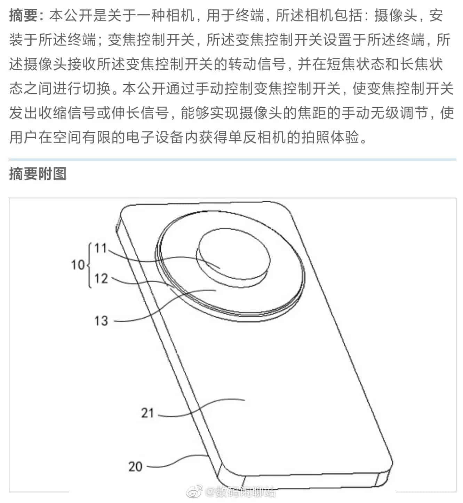

Xiaomi estaria criando celular com 'câmera DSLR', revela patente

A Xiaomi pode estar trabalhando em um novo celular com uma câmera que opera de modo parecido com câmeras DLSR profissionais e semiprofissionais. A informação vem de um registro de patente da empresa, sendo divulgado por uma conta conhecida pelos seus vazamentos corretos, a Digital Chat Station.
Segundo informações da patente, o dispositivo em questão usa um grande sensor único em sua câmera, capaz de se mover no corpo do smartphone para entregar diferentes distâncias focais e estados de zoom. Atualmente, a maioria dos celulares opta por ter várias câmeras para entregar o mesmo efeito, deixando as opções de foco e zoom para cada sensor no corpo do aparelho.
A companhia está prometendo ganhos de 15% em single-thread e até 41% no multi-thread quando comparados aos processadores anteriores. Aliás, vale destacar que com os novos produtos, a marca aumentou a quantidade de núcleos de Eficiência presentes em diversos produtos da lista.
Imagem esquemática na patente da Xiaomi sobre o novo celular.
A Xiaomi não seria a primeira a tentar uma solução no estilo DSLR para um smartphone. A Samsung, por exemplo, já lançou modelos como o Galaxy K Zoom e o Galaxy S4 Zoom — celulares que, vistos por trás, pareciam mais uma câmera digital das antigas mesmo.
A solução da fabricante chinesa, de acordo com a patente, parece ser mais discreta e não vai entregar uma câmera protuberante atrás do dispositivo, além de possivelmente não deixá-lo muito mais pesado. Se funcionar, pode ser a receita para dar certo que os dispositivos anteriores não conseguiram alcançar.